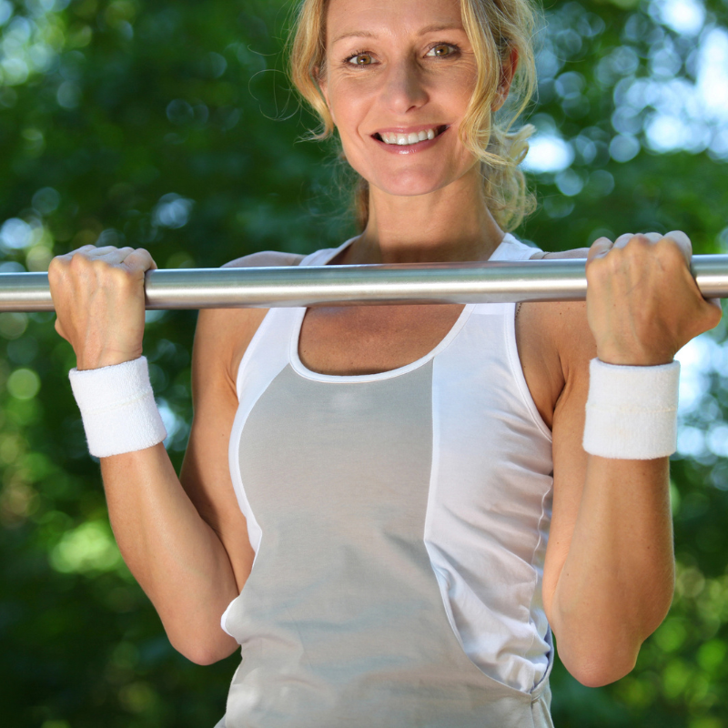
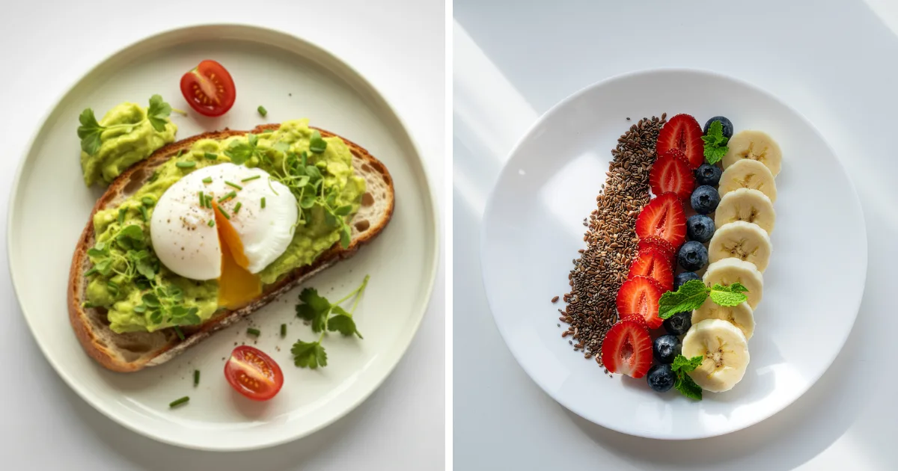
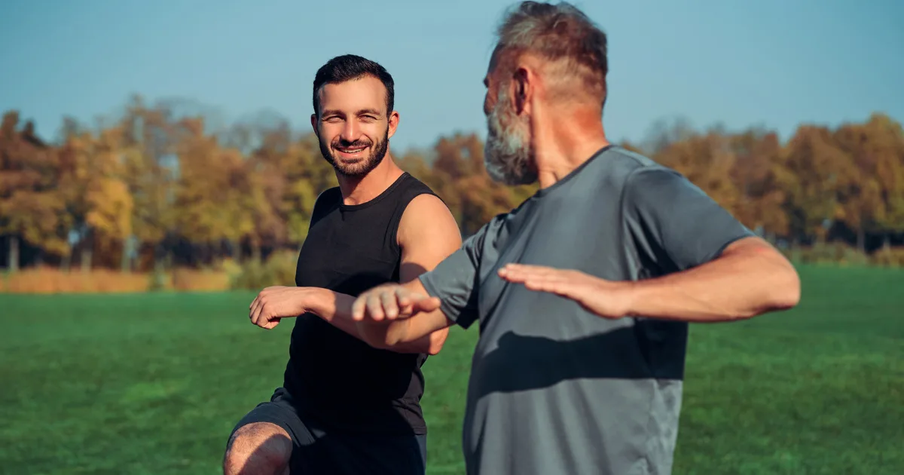

Hubnutí po 50: jak na to bezpečně a účinně
Padesátka není konec – je to nový začátek. Ano, hubnutí po 50 má svá specifika: metabolismus je pomalejší, hormonální změny jsou v plném proudu a tělo se regeneruje pomaleji. Ale právě proto je péče o zdravou hmotnost v tomto věku tak důležitá. Každé kilo navíc výrazněji zatěžuje klouby, srdce i cévní systém.
Dobrá zpráva? S rozumným přístupem ke stravě a pohybu se dá zhubnout v jakémkoli věku. V tomto článku se podíváme na to, jak si nastavit jídelníček, jaké cvičení je po 50 bezpečné a účinné, a proč se vyplatí spolupracovat s lékařem.

Co se děje v těle po padesátce
Po 50. roce věku se prohlubují změny, které začaly už kolem čtyřicítky. Pochopení těchto procesů vám pomůže nastavit si realistická očekávání a zvolit správnou strategii.
Menopauza a andropauza
U žen je klíčovým milníkem menopauza – estrogen klesá na minimum, což vede k přerozdělení tukové tkáně (více tuku na břiše), snížení hustoty kostí a zhoršení inzulinové citlivosti. U mužů pokračuje pokles testosteronu (andropauza), který se projevuje úbytkem svalů, zvýšenou únavou a snadnějším přibíráním na váze.
Úbytek svalové hmoty
Po 50 se sarkopenie (úbytek svalů) zrychluje na 1–2 % ročně, pokud aktivně neposilujete. Méně svalů = nižší bazální metabolismus = méně spálených kalorií v klidu. Proto je zachování svalové hmoty jedním z hlavních cílů hubnutí v tomto věku.
Zdravotní rizika nadváhy po 50
- Kardiovaskulární onemocnění – riziko stoupá s věkem i s váhou
- Diabetes 2. typu – snížená inzulinová citlivost + nadváha = vysoké riziko
- Osteoartróza – každé kilo navíc zatěžuje kolenní kloub silou 4 kg
- Osteoporóza – nadváha paradoxně chrání kosti, ale hubnutí bez cvičení může riziko zvýšit

Jídelníček na hubnutí po 50
Strava po padesátce musí být nutričně bohatá – tělo potřebuje více živin při nižší kalorické potřebě. Každé jídlo by mělo „něco přinášet".
Na co se zaměřit
- Bílkoviny v každém jídle – 1,2–1,5 g/kg hmotnosti. Bílkoviny chrání svaly a posilují kosti. Zdroje: ryby, drůbež, vejce, tvaroh, luštěniny.
- Vápník a vitamin D – klíčové pro kosti. Mléčné výrobky, sardinky, brokolice. Vitamin D často vyžaduje suplementaci (1 000–2 000 IU denně).
- Omega-3 mastné kyseliny – tučné ryby 2× týdně, případně doplněk stravy. Chrání srdce a snižují záněty.
- Dostatek vlákniny – 25–30 g denně ze zeleniny, ovoce, luštěnin a celozrnných výrobků.
- Hydratace – pocit žízně se s věkem snižuje, pijte pravidelně i bez pocitu žízně (1,5–2 litry denně).
Vzorový denní jídelníček
| Jídlo | Příklad | Přibližně kcal |
|---|---|---|
| Snídaně | Celozrnný chléb, cottage, rajče, olivový olej | 300 |
| Svačina | Hrst vlašských ořechů, kousek hořké čokolády | 180 |
| Oběd | Pečený losos, batáty, špenátový salát | 500 |
| Svačina | Bílý jogurt s lněnými semínky | 130 |
| Večeře | Kuřecí vývar s nudlemi, celozrnný rohlík | 350 |
Orientační jídelníček pro ženu s TDEE 1 700 kcal (deficit ~240 kcal).

Cvičení na hubnutí po 50
Správně zvolený pohyb je po padesátce naprosto klíčový. Nejen pro hubnutí, ale i pro udržení pohyblivosti, síly a nezávislosti v dalších dekádách života.
Silový trénink – absolutní priorita
Posilování je po 50 důležitější než kardio. Buduje svaly, zpevňuje kosti (prevence osteoporózy) a zlepšuje rovnováhu. Začněte 2× týdně, ideálně s trenérem, který vám pomůže s technikou.
- Dřepy (s vlastní vahou nebo lehkým závažím)
- Výpady
- Přitahování gumy / lehké jednoruční činky
- Prkno (plank) – posiluje střed těla
- Sed-lehy nebo zkracovačky – šetrně
Kardio – šetrné a pravidelné
Volte nízkonárazové aktivity, které nezatěžují klouby:
- Chůze – 30–45 minut denně, ideálně svižným tempem (více o hubnutí chůzí)
- Plavání – šetrné ke kloubům, posiluje celé tělo
- Jízda na kole / rotopedu – minimální zátěž kolen
- Jóga / tai-chi – zlepšuje rovnováhu, flexibilitu a snižuje stres
Čemu se vyhnout
- Skokovým a vysokonárazovým aktivitám bez předchozí přípravy
- Přetrénování – regenerace po 50 trvá déle
- Cvičení přes bolest – bolest kloubů signalizuje problém
Léky na hubnutí po 50 a odborná pomoc
Po padesátce je spolupráce s lékařem při hubnutí obzvlášť důležitá. Než začnete s jakýmkoli režimem, nechte si udělat základní vyšetření – krevní obraz, lipidy, glykémii, štítnou žlázu a vitamin D.
Kdy zvážit léky na hubnutí
- BMI nad 30, nebo nad 27 s přidruženými onemocněními
- Neúspěch konzervativních metod (dieta + pohyb) po dobu 3–6 měsíců
- Vždy pod dohledem lékaře – nikdy nekupujte léky na hubnutí na vlastní pěst
Kdy vyhledat specialistu
- Obezitolog – BMI nad 30, opakovaný neúspěch při hubnutí
- Endokrinolog – podezření na hormonální příčinu (štítná žláza, inzulinová rezistence)
- Nutriční terapeut – individuální jídelníček s ohledem na zdravotní stav
- Fyzioterapeut – pokud máte potíže s pohybovým aparátem
Začněte tím, že si spočítáte BMI. Pokud spadáte do kategorie obezity, je návštěva lékaře dobrý první krok.
Shrnutí: hubnutí po 50 krok za krokem
- Nechte se vyšetřit – krevní obraz, hormony, štítná žláza
- Nastavte mírný kalorický deficit – 200–350 kcal, ne víc
- Jezte dostatek bílkovin – v každém jídle
- Posilujte – 2–3× týdně, i s vlastní vahou
- Choďte – každý den alespoň 30 minut
- Dbejte na spánek – 7–8 hodin
- Buďte trpěliví – cílem je 0,3–0,5 kg týdně
Hubnutí po 50 je marathon, ne sprint. Nejdůležitější je začít – a vytrvat. Pokud vás zajímají specifika hubnutí ve čtyřiceti, přečtěte si náš článek Hubnutí po 40.